Contexto

Para termos uma pequena ideia vamos baixar e inserir uma base de dados maior
Slide visual do material original.
Contexto
Vamos criar um banco de dados de produção agrícola do IBGE
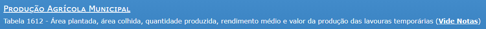
Baixando os dados
Escolhendo a tabela
Role para baixo e escolha
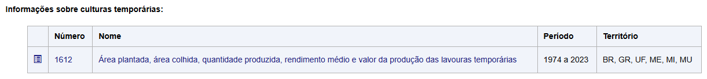
Escolhendo dados
Vamos trocar o layout da tabela, pois em banco de dados relacionais queremos tudo nas linhas, exceto as diferentes variáveis
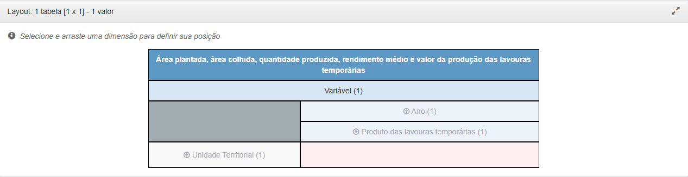
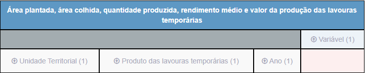
Escolhendo dados
As variáveis que escolheremos serão
Nas lavouras escolha tudo, menos total
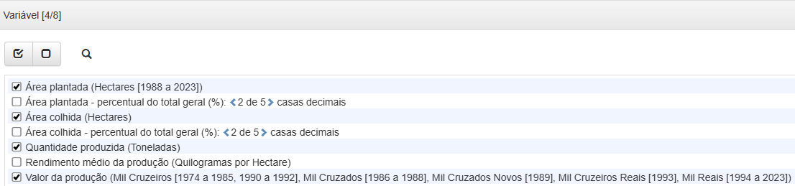
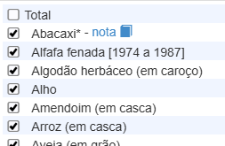
Escolhendo dados
Mesmo logado, o SIDRA limita em 3 milhões de dados por exportação, então só podemos escolher 3 anos por vez
Vamos pegar dados de todos os municípios
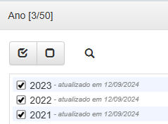
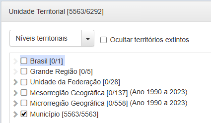
Escolhendo dados
Clique em download e escolha as opções
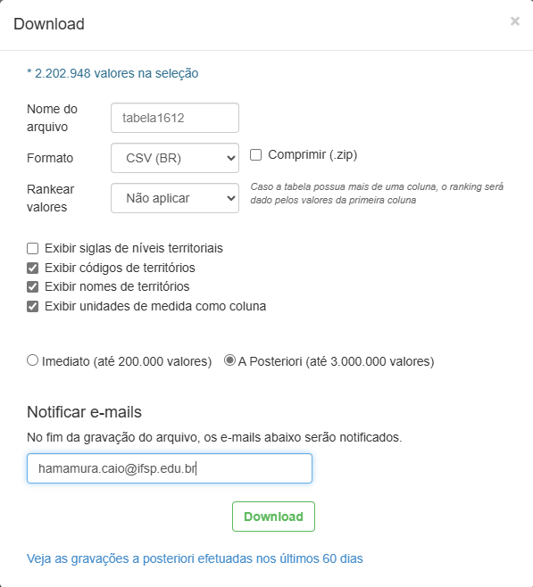
Verificando os dados
Verificando os dados pelo terminal
Os dados são meio grandes
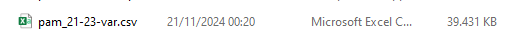
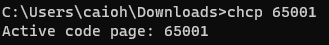

O comando more
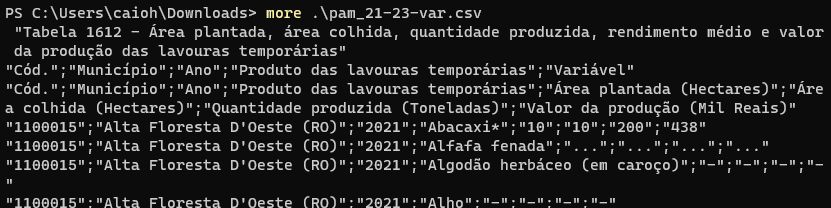
Podemos ver que temos as colunas
Vamos importar tudo como texto!
Linhas ruins que não são dados?
No SIDRA, alguns metadados (dados sobre os dados) são colocados na própria tabela, vamos ter que limpar e deixar só os dados!
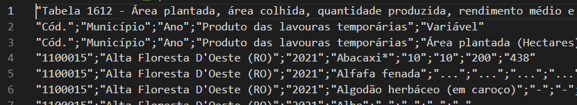
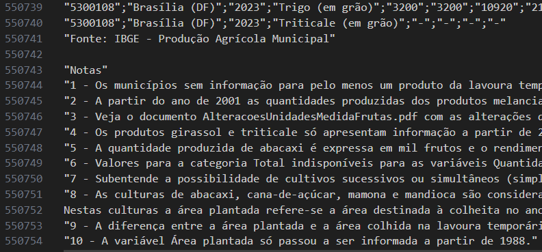
Limpando linhas que não são válidas
Quantas linhas vamos remover do início = 3
Get-Content .\pam_21-23-var.csv -TotalCount 10 | Select-String . | Select-Object linenumber,line
head pam_21-23-var.csv | nl
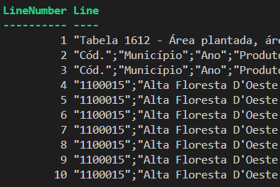


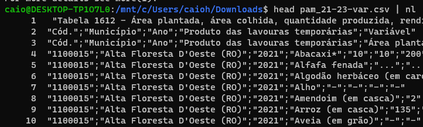
Quantas linhas vamos remover do final = (40 - 7) = 33
Get-Content .\pam_21-23-var.csv -Tail 40 | Select-String . | Select-Object linenumber,line
tail -n 40 pam_21-23-var.csv | nl


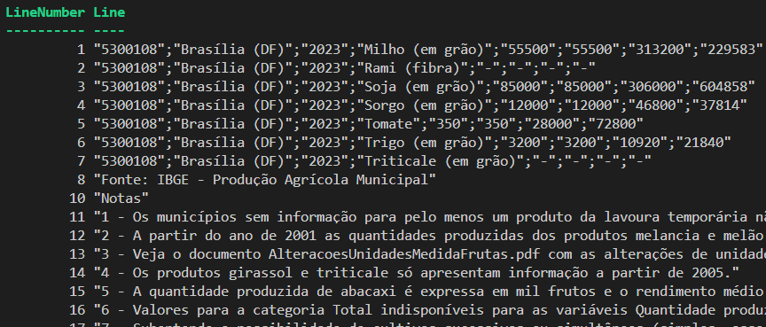
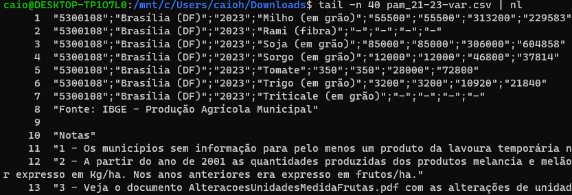
Removendo e jogando em um novo arquivo
head -n -33 pam_21-23-var.csv | tail -n +4 > pam_ok.csv


Copiando dados
Copiando dados com
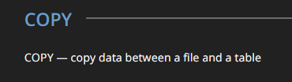
Importando os dados do IBGE

Importando com psql
Modificando dados para inteiro!

Para verificar se tem algum erro na coluna de inteiro é só tentar transformar
E se não der certo?
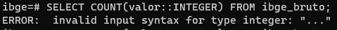
Agora podemos atualizar os valores
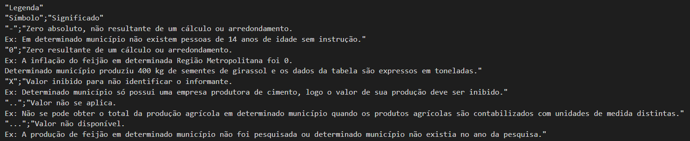
Separando em tabelas
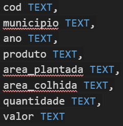
Tabela Município
Tabela Produto
Consultas lentas e índices
Índices em bancos de dados relacionais
Quando e como usar índice?
Analisando necessidade de índice
Slide 37
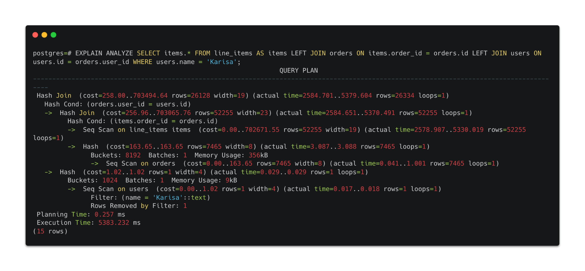
CREATE INDEX idx_line_item_orders ON line_items (order_id); CREATE INDEX idx_user_orders on orders (user_id);
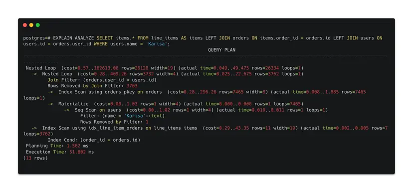
Como os índices funcionam?
Prática!
Slide visual do material original.
Prof. Caio Hamamura
Bons estudos!